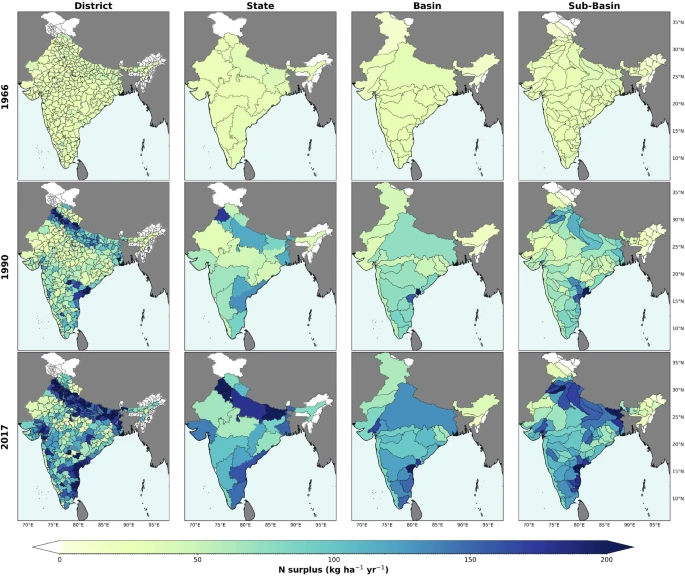

Project 1: Indian Interstate Trade & Nutrient Pollution
Overview: Intensive agricultural practices have driven India’s green revolution. However, the resulting fertilizer-intensive and trade-driven systems have become ecologically unsustainable. This study explores the fate of nitrogen and phosphorus in India’s interstate staple crop trade network.
Objectives
- Track the spatiotemporal evolution of physical and virtual nutrient flows in Indian trade.
- Assess environmental loading on key production zones.
- Evaluate the sustainability of wheat and rice trade in light of nutrient surplus.
- Translate nutrient surplus into graywater footprint for deeper ecological insight.
Results
The study found that production hubs account for 50% of India’s trade-transferred nutrient surplus—around 710 Gg of nitrogen and 200 Gg of phosphorus annually. When converted to graywater footprint, the results highlight intensified pollution in regions already facing water stress. These findings can inform sustainable policy design to safeguard both food security and environmental quality.
Project 2: Restructuring Agricultural Systems for Lower Environmental Costs

Overview: This study evaluates how India’s food production can be restructured by switching crops and locations to reduce environmental impacts.
Objectives
- Determine how cereal crop production aligns with the Sustainable Development Goals (SDGs).
- Quantify cross-benefits of restructuring in terms of nutrient surplus, water use, and emissions.
- Provide a blueprint for spatially optimized cropping strategies.
Results
The proposed restructuring strategies significantly lower nitrogen surplus, greenhouse gas emissions, and water use, while improving calorie production and farmer income. This study underscores the urgent need for system-level agricultural transitions.
Project 3: District-Scale Nitrogen Surplus Dataset (1966–2017)

Overview: This research addresses a major gap in India's nitrogen data by constructing a detailed, long-term district-level dataset on agricultural nitrogen surplus.
Objectives
- Estimate annual nitrogen surplus for Indian districts from 1966 to 2017.
- Address uncertainty by integrating 12 different estimates based on varying assumptions.
- Enable spatial aggregation to support nitrogen policy and management strategies.
Results
The final dataset accounts for methodological uncertainties and aligns well with national benchmarks. This work offers actionable insights for improving nitrogen-use efficiency and guiding policy toward reduced environmental impact and improved agricultural productivity.